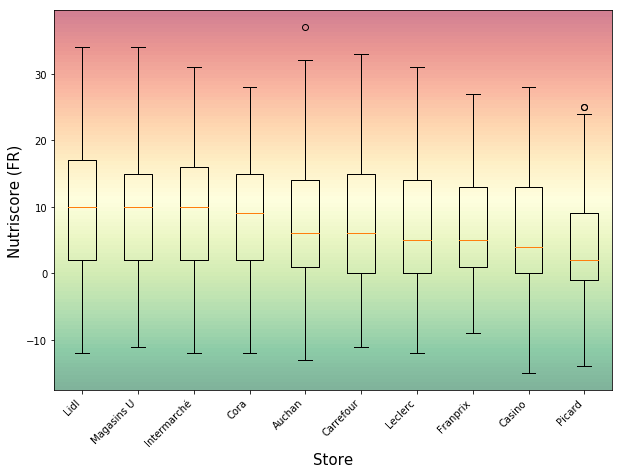
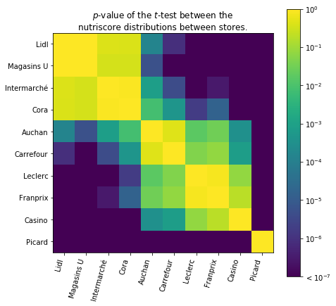
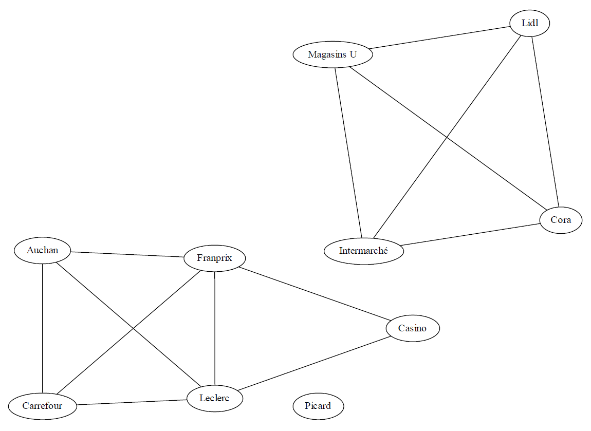

Stores
The Open Food Facts data base gathers essentially products from France and United States. Therefore, in order to compare the results, we concentrated our study on France stores. French stores and supermarket have different reputations. Some like Lidl or Aldi are very cheap and discount stores whereas Monoprix is supposed to be a high quality super market. Some others like Carrefour or Leclerc are intermediate superior quality supermarkets.Question is: if the difference of reputation is somewhat obvious on the prices of the products in those stores, does a significant difference also exists on the quality of the food?
Hierarchy of stores
Just like for the comparison between organic and non-organic food, the nutriscore is used to compare the quality of the food sold by the stores. The lower the nutriscore, the higher the quality of the food.

Comparison of nutriscores between stores.
On this chart, there appears to be some differences between the mean nutriscore of the stores. However, the variance for a given store is quite high given the multiplicity of categories of products sold. If these differences are significant, could we create a hierarchy of stores and sort them into quality levels?
Levels of quality

p-values of the t-test between the distributions of nutriscores for each store.

Graph of equivalent stores.
Low-cost low quality food.

High quality food. (An outlier not selling the same products as the others)
More expensive food of higher quality.